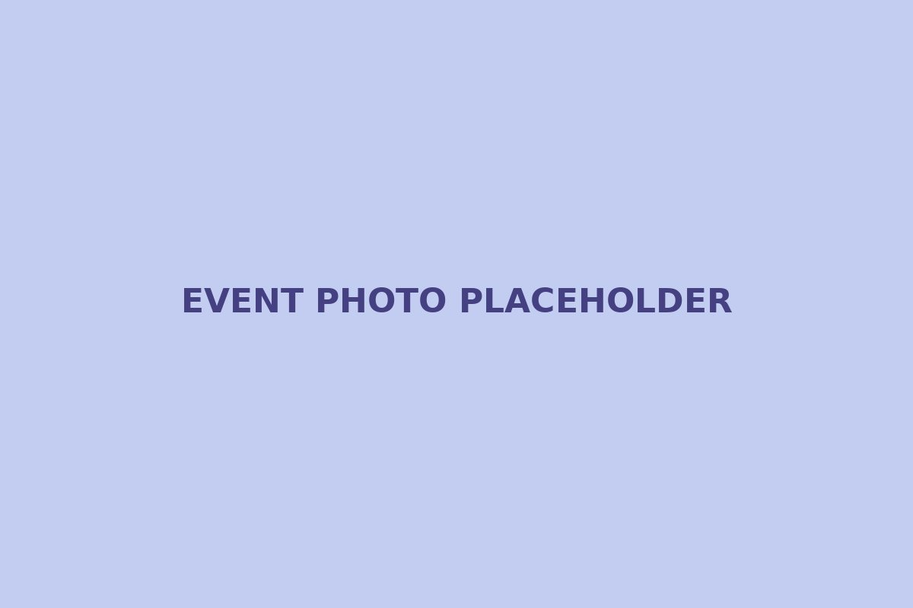
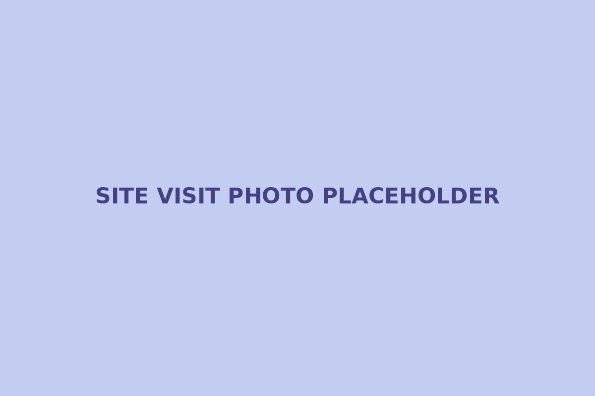

Our mission is to improve the lives of women and girls in Los Angeles through educational opportunities.
Our Process


-
Build an Event
Every other spring, the board hosts a 400+ person event at a venue in Los Angeles to benefit our cause. We manage all aspects of event planning, including marketing, logistics, and celebrity outreach.
-
Fundraise
The primary source of money raised is through ticket sales of our biennial event, online, and live auctions.
-
Assess Needs
In the fall after the fundraiser, we evaluate current local challenges and search for organizations to grant to with the aim of improving our community.
-
Request for Proposals
We narrow down potential grant partners from thirty to eight prospects, after which they are asked to complete our Request for Proposal for funding (RFP).
-
Site Visits
Once we receive a completed RFP, we schedule a site visit to each of the prospective grant partners. A site visit does not guarantee funds, but does signal that an organization has about a 50% chance at funding.
-
Grant Funds
We typically grant to four organizations per cycle. Organizations receive various amounts of funding based on our discretion. To date we have granted over $500,000.
-
Invest Funds
Under the advisement of financial professionals, we invest a small percentage of our funds with the goal of granting larger sums of money in the future.